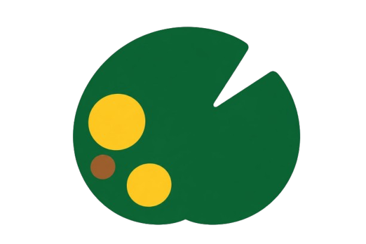

guarden.spaceIf you can take a photo, you can do this. That's the whole skill list.
Take a few photos from where your plants live. That's it — no measuring, no notes, no fuss.
Your garden pops up as a cute little map, showing where the sunshine lands all day long.
A pro nutrition manager looks after every plant, giving each one exactly the food it needs to grow strong.
Spot something off? Your plant doctor identifies the disease and gives you the exact steps to nurse it back to health.
Your helper tells you what to do and when. You do the fun part and watch everything thrive.
That friendly little map is powered by a real solar-simulation engine and a coordinated crew of autonomous AI agents — ray-tracing the sun across your garden and reasoning about every plant, square metre by square metre.
From your photos and location we reconstruct your plot and march the sun across the real sky — casting the shadows of walls, fences and trees onto a per-square-metre grid.
Real sun altitude & azimuth for your exact latitude — every hour, every month of the year.
Obstacles you photograph are projected as moving shade, so the map shows real hours of sun, not guesses.
Scores are rendered blue → red across the field's own range, making sun vs. shade unmistakable.
Point your camera at a sick plant, add a sentence, and a multimodal reasoning engine cross-examines you like a real plant pathologist — then writes an ordered cure and tracks it to recovery.
Reads your diseased-area photos and your words together, weighing the plant's soil, sun and full care history.
Recalls every past episode of that exact plant, so each diagnosis builds on its own medical record.
Emits a dated, step-by-step remedy plan and auto-pauses feeding & spraying until the plant has safely recovered.
For every plant it fuses the profile, soil, planting date, full dosing history and the solar model — then asks the sharper question first: does this plant actually need anything right now?
Often the right answer is “wait.” It reads your dose dates and sunlight before ever recommending a thing.
Grams & millilitres with dilution, in household measures, naming real products you can actually buy.
One pending dose at a time, enforced check-back windows, and shade-aware frequency so nothing is ever over-fed or over-sprayed.
Think of it as a friendly guide living in your pocket, looking after every plant like a pro.
Upload photos and your garden turns into a living map that shows exactly where the sun shines — and for how long. Finally know the sunny spots from the shady ones without guessing.
Sunlight, solvedNever wonder “am I feeding this right?” again. Your helper picks the perfect food for each plant and gives you a simple, friendly schedule to follow.
Feeding made easyPesky pests don't stand a chance. Get simple, plant-by-plant protection tips so your leaves stay green and your garden stays happy.
Bugs, blockedSomething looking sad? Snap a photo, say what's wrong, and get a clear plan to nurse it back to health — with reminders that track the recovery until it's smiling again.
Rescue & healYellow leaves, funny spots, droopy stems — whatever it is, just take a picture and tell us what you see. You'll get a friendly rescue plan in plain words, and gentle reminders until your plant is back on its feet.
Grab your phone, snap your plants, and meet the little world you've been growing all along. It's free to start — and way more fun than you'd expect.